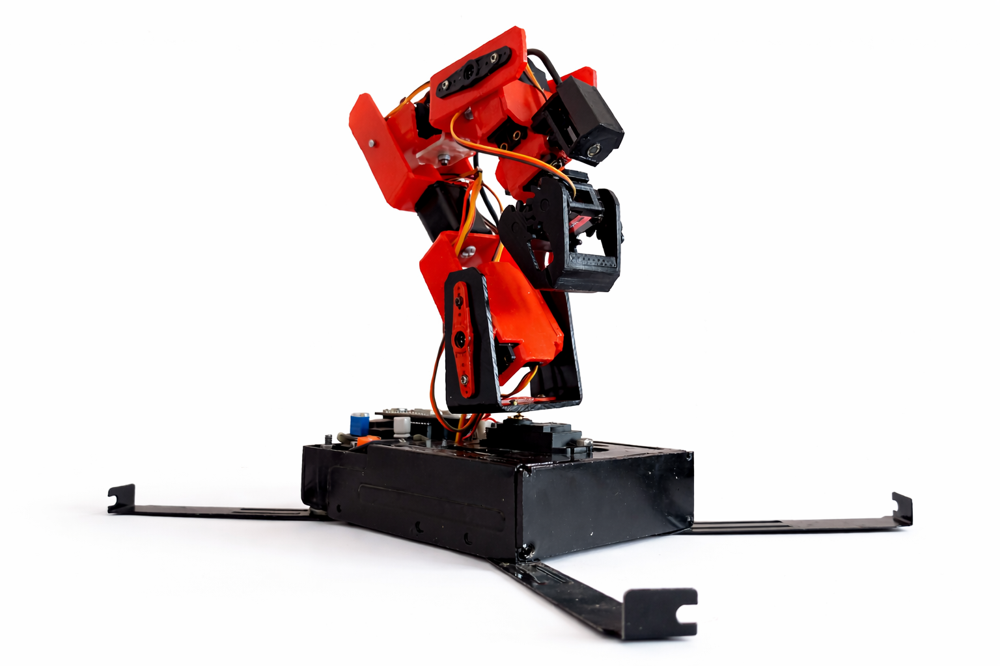
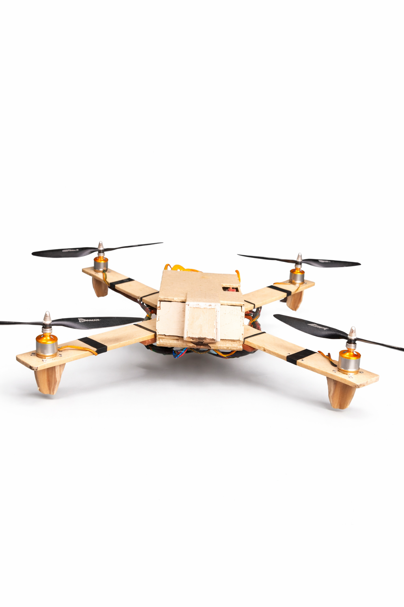
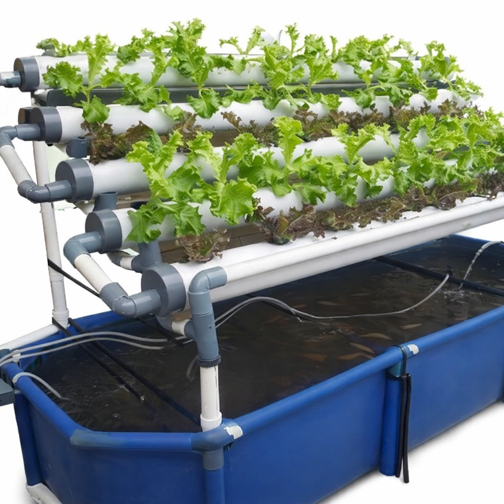

Bras robotique avec caméra et IA pour le tri automatisé d'objets.
Voir les détailsDrone avec IA pour la surveillance des plantations et l'analyse des cultures.
Voir les détailsGestion automatique de l'élevage de poissons et des cultures via contrôle intelligent.
Voir les détails2024 – En cours
Bras robotique 6 axes capable de manipuler et trier des objets de différentes formes. Intègre une caméra pour la vision par ordinateur et utilise l'IA pour l'apprentissage et l'optimisation des mouvements.
Précision de tri de 94%. Le bras reconnaît et classe différents types d'objets en temps réel. Présenté lors d'une démo industrielle avec retours positifs.
Photos du prototype

2024 – En cours
Drone agricole capable de surveiller les plantations et analyser la santé des cultures. Intègre des capteurs multispectraux et l'IA pour prédire les maladies des plantes et optimiser l'irrigation.
Système de détection des maladies du riz basé sur l’analyse d’images. Tests expérimentaux montrant jusqu’à 91% de précision de détection. Conçu pour contribuer à une meilleure gestion de l’irrigation.
Photos du drone

2023 – 2024
Système complet combinant élevage de tilapia et culture de légumes (laitue, tomate). Un contrôleur automatisé gère le pH, la température, l'oxygénation et l'alimentation des poissons en temps réel.
Prototype d’aquaponie conçu et testé à petite échelle. Validation du fonctionnement du cycle eau–plantes–poissons lors des démonstrations expérimentales. Projet pensé pour une application potentielle en agriculture urbaine à Madagascar.
Photos du système

Parlons de comment transformer votre idée en réalité